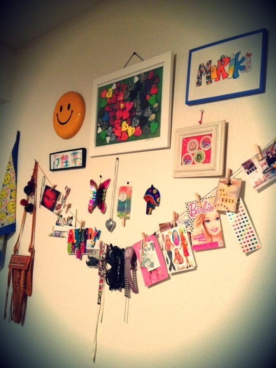
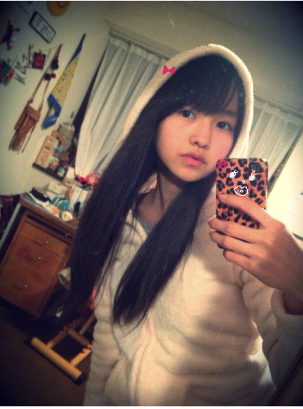

| 2012/01 04 Wed | 45回目*marika |
やぁこんばんわ ☆☆
いつも読んでくださってる方、
初めて読んでくださった方、
コメントしてくださった方、
ありがとうございます!!
...........................
・なんでへびたんって言うの？
あっ...へびたんではなくて
ベビたんです:D!
なんでかというと...
ベビーフェイス。童顔だからです笑
まりかでもいいですよ♪
・ガキ使のどこが一番面白かった？
机の引き出しトラップが
毎回おもしろすぎます ))!!!
昔やってた鬼ごっことか
吹き矢の時もめっちゃおもしろいxD笑
・書道とか習ってた？
おばあちゃんが習字の先生で
おばあちゃんに習ってました☆
硬筆の方が得意です。
・椎名林檎好きなの？
すきです---- ♡
この前、好きなアーティストは？ていう
質問にかいときゃ良かった><
紅白の林檎さんめっちゃ素敵やった♡
『カーネーション』
『女の子は誰でも』
レトロで、かわいくて、♡♡
センスも素敵で憧れの女性...
・福袋とか買った？
ああーショッピング行ってないx(!!
福袋買ってないです...
・靴とかって、何足くらい持ってるの？
ママと一緒に使ってるのもあるから
サンダルも含めると.......
んー....
いっぱいあります☆!!
・お洋服、初売りで買ったの？？
セール行った？？
元旦に行けばよかった; ;
休みがあれば行きたいな♪
あっ!zozotownセールしてるッ=33
・おみくじ引いたかな？
引きました!!
何引いたかひみつ〜^^
・中学で一番楽しかったことは？
中３の時のいつめんと
わいわいうきゃうきゃしてたのが
もう本当にね!!楽しすぎました!!
ちょっかい出し合ってた笑
思い出しただけでテンション高山です↑↑
・ＡＫＢに推しめんはいる？
AKB48さんは詳しくなかったので
推し!!はあんまり分からないです><
・箸袋の字は筆ペンで書いたのかな？
筆ペンで書きました^^*
筆ペン.....すき。笑
・ニットのワンピース、手編みなのかな？
手編みじゃないですよ〜!
E hyphen
ていうブランドのです:)
・学校ではみんなからなんてよばれてるの？
「まりか」**
です^^
今日はここまで><
...........................
この前部屋のしゃしん見たい！
という意見がありましたので、
第２弾
(第１弾は21回目に載ってます:3)
どーーーん

部屋の壁。
私は何でもかんでも
飾りたがるや〜つです。
そんで眺める←
ぼそっと
「はぁ〜いいわ〜〜....」
てね笑
『万理華』は
香港のお土産♪
『MARIKA』は
絵の上手な友達に頼んで
描いてもらった ^^
ありがと♡
ずっと飾ってます。
好きなポストカード、
かわいいタグは
集めてお気に入りを飾っております。
友達には
「楽しい部屋だね」
とゆわれます。^^うふ
レトロカラフル
ヴィンテージ
アンティーク
メキシカン
アメリカン
エスニック
...
みたいなの大好物です。!!
いひ。
アイドルらしからぬ!!な.....うん。
みなさん、風邪の心配ありがとうございます><
しっかりからだ休めました。
今は体調大丈夫です!!
ちゃんと体力つけて倒れないように
鉄分も取っていつでも
体調万全の状態でいられるように
気をつけます。
うがい
手洗い
うがい
手洗い
うがい
手洗い
..........
よし!明日も頑張ろう。
風邪引いている方!
私と一緒に頑張って治しましょう*
試合、受験、仕事、学校
みんな頑張りまりか:)←(思いついた）
＼フレーフレー!!／
私は辛い時、
みなさんからのコメントを読んで
元気になります。
辛い時は
私のBloGを読んで
元気になってほしいな＊

髪のびたなぁ。

LOVE
ベビたん*****bA by marika